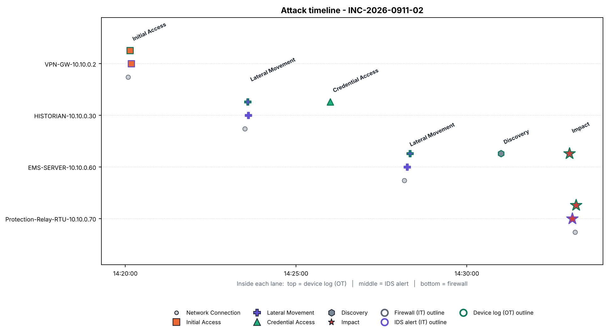
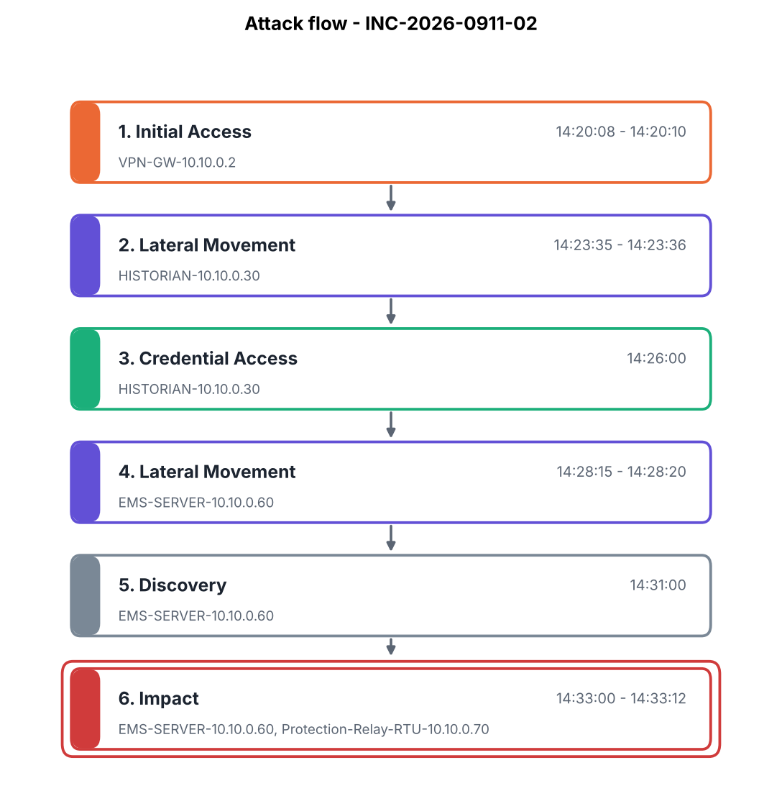
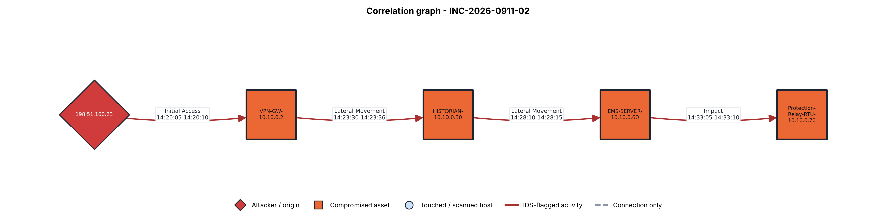

| Time | Stage | Asset | Source | Description |
|---|---|---|---|---|
| 14:20:05 | Network Connection | VPN-GW-10.10.0.2 | firewall | ALLOW TCP 198.51.100.23 -> 10.10.0.2:443 |
| 14:20:08 | Initial Access | VPN-GW-10.10.0.2 | device | [VPN-GW-10.10.0.2] VPN_LOGIN by svc_vendor: VPN login succeeded from 198.51.100.23 using valid vendor account |
| 14:20:10 | Initial Access | VPN-GW-10.10.0.2 | ids | ET POLICY VPN Login from Unusual Geolocation (Initial-Access) |
| 14:23:30 | Network Connection | HISTORIAN-10.10.0.30 | firewall | ALLOW TCP 10.10.0.2 -> 10.10.0.30:3389 |
| 14:23:35 | Lateral Movement | HISTORIAN-10.10.0.30 | device | [HISTORIAN-10.10.0.30] RDP_SESSION by svc_vendor: Remote desktop session opened from 10.10.0.2 |
| 14:23:36 | Lateral Movement | HISTORIAN-10.10.0.30 | ids | ET POLICY RDP Session Initiated from VPN Gateway (Lateral-Movement) |
| 14:26:00 | Credential Access | HISTORIAN-10.10.0.30 | device | [HISTORIAN-10.10.0.30] CRED_DUMP by svc_vendor: Credential dumping utility executed (lsass memory access) |
| 14:28:10 | Network Connection | EMS-SERVER-10.10.0.60 | firewall | ALLOW TCP 10.10.0.30 -> 10.10.0.60:445 |
| 14:28:15 | Lateral Movement | EMS-SERVER-10.10.0.60 | ids | ET POLICY SMB Administrative Share Access (Lateral-Movement) |
| 14:28:20 | Lateral Movement | EMS-SERVER-10.10.0.60 | device | [EMS-SERVER-10.10.0.60] REMOTE_LOGIN by svc_vendor: Administrator login from 10.10.0.30 |
| 14:31:00 | Discovery | EMS-SERVER-10.10.0.60 | device | [EMS-SERVER-10.10.0.60] CONFIG_ACCESS by svc_vendor: EMS protection-setpoint configuration console opened |
| 14:33:00 | Impact | EMS-SERVER-10.10.0.60 | device | [EMS-SERVER-10.10.0.60] SETPOINT_CHANGE by svc_vendor: Under-frequency protection setpoint changed from 49.5 Hz to 47.0 Hz |
| 14:33:05 | Impact | Protection-Relay-RTU-10.10.0.70 | ids | ET SCADA IEC-104 Setpoint Command Anomaly (ICS-Attack) |
| 14:33:10 | Network Connection | Protection-Relay-RTU-10.10.0.70 | firewall | ALLOW TCP 10.10.0.60 -> 10.10.0.70:2404 |
| 14:33:12 | Impact | Protection-Relay-RTU-10.10.0.70 | device | [Protection-Relay-RTU-10.10.0.70] SETPOINT_CHANGE by EMS-SERVER-10.10.0.60: Under-frequency trip threshold modified via IEC 60870-5-104 command |